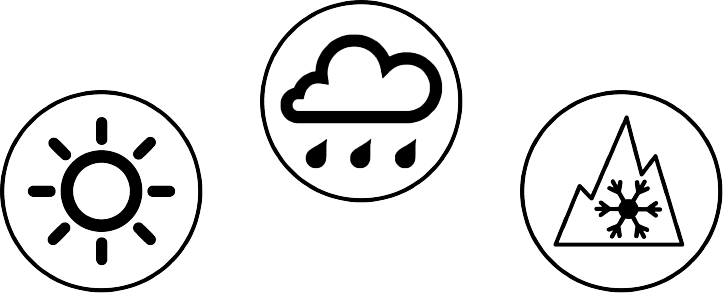
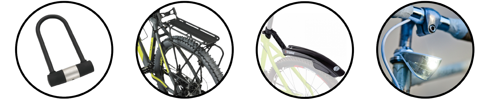
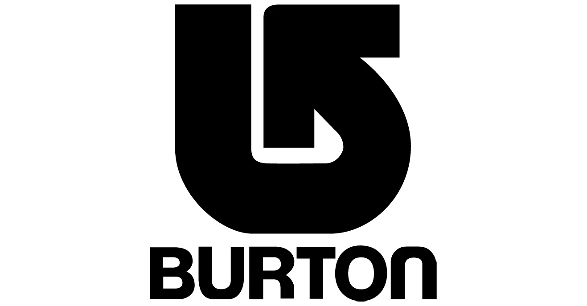
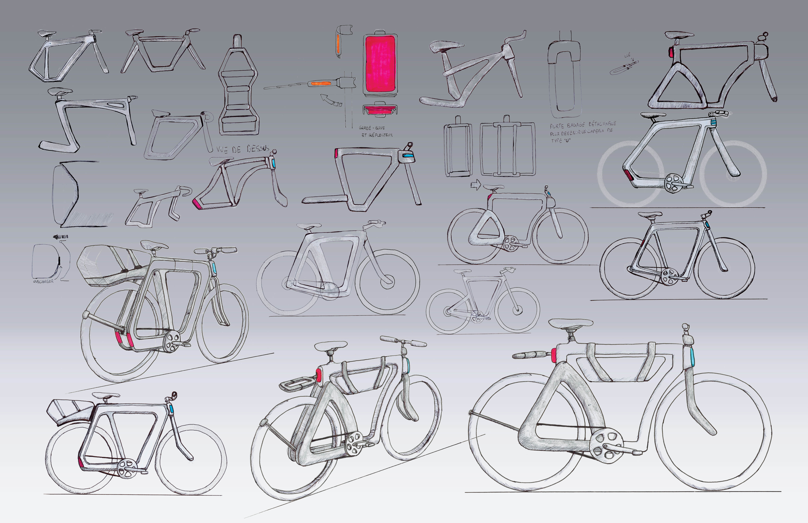
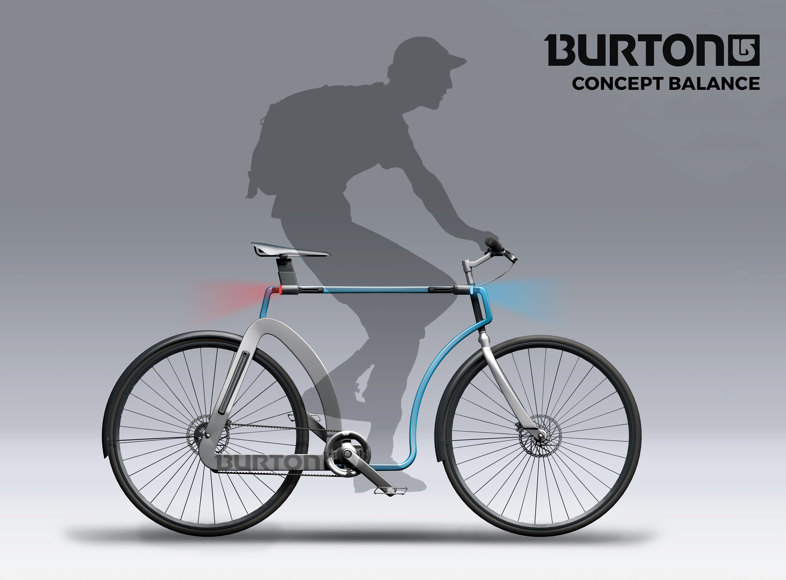
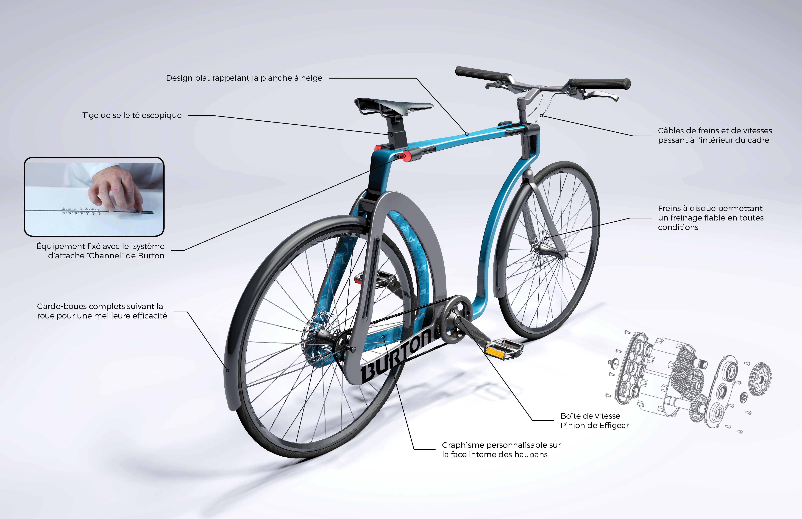
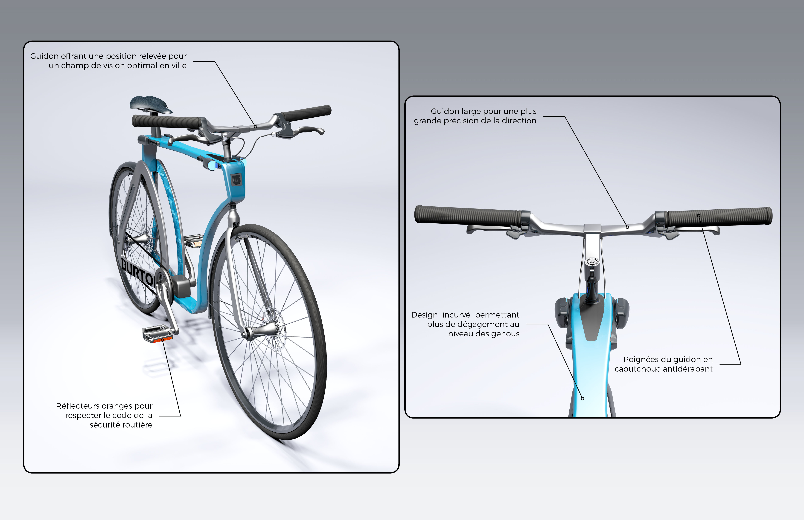
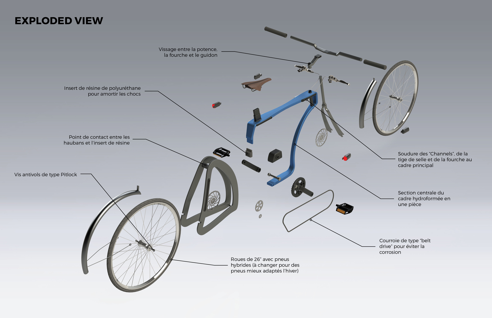
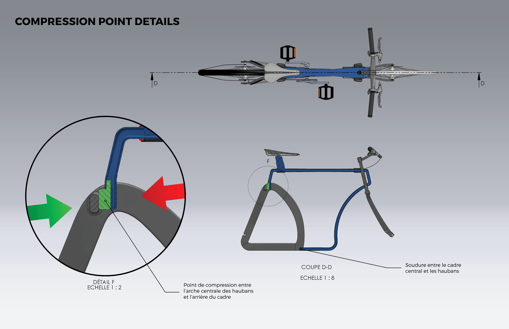
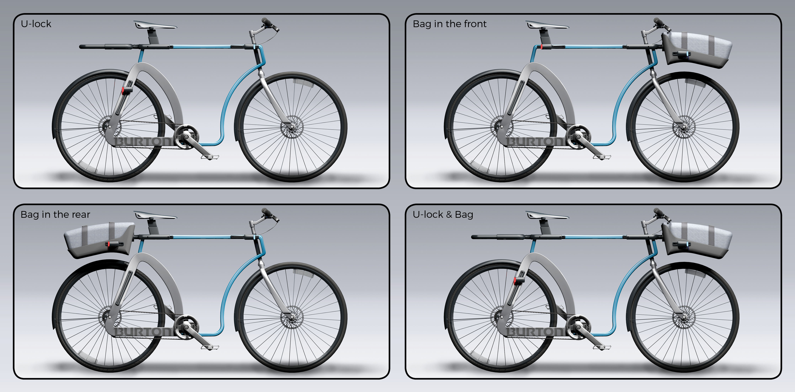

Urban Utility
Bike Concept
A bike designed to withstand the Canadian climate.
Inspired by Burton's branding.
Summary
The Canadian climate is not always the most comfortable in winter. However, more and more citizens are commuting by bike all year long. The objective of this project was to design a reimagined bike that would allow people to get around the city of Montreal more conveniently regardless of the time of the year. As an additional constraint, the bike also had to embrace Burton’s branding.
My Role
Understanding Burton’s branding, researching fabrication process, sketching and ideating, building a 1:1 mock-up to test the ergonomics, 3D modeling and rendering
Tools
Solidworks, C4D, Photoshop, Illustrator, InDesign
Constraints
Weather
 The bicycle had to be utilitarian and adapted to the urban context of a city like Montreal. It had to be agile, allowing the user to move quickly through urban traffic. In addition, it had to be adapted to all types of weather, both in summer and winter.
Accessories
To be useful and safe, the bicycle had to be equipped with several accessories. U-Locks, bike racks, fenders and lights were essential accessories to integrate into the bike design.

Fabrication process
An additional design criteria for this project was the technology used to manufacture the bike frame. The project required the use of aluminum as the main material for the bike frame, and it had to be hydroformed.
Burton's branding
 Finally, the bike had to respect Burton's branding. Burton is a snowboard company whose image tends to evolve with the seasons. Burton products are meant to be creative, progressive, and functional. Their users want innovation, but without compromising the relaxed look and aspects of comfort the brand is known for.
Design
The design phase of the bike consisted of many sketches to explore various forms that allowed for a more original, functional bike. By refining the drawings, the final design of the bike emerged. A volume model was then built to validate the proportions and ergonomics of the concept. The different accessories and details of the bike were also designed during this phase.

The Bike
The Balance concept is a four-season, utilitarian, urban bike that embodies Burton's branding. The design is reminiscent of a snowboard with a flattened frame profile and customizable graphics on the inside of the seat stays. The frame is also equipped with Burton's "Channel" binding system. This system, which is traditionally used to attach bindings to a snowboard, is used here to attach accessories to the bike while allowing them to be in various configurations. All the details and features of the Balance bike are described (in French) in the following images.

Details & Features
   
Configurations
The "Channel" attachment system incorporated in the frame allows the bike to be configured as needed. Here are 4 possible configurations.
